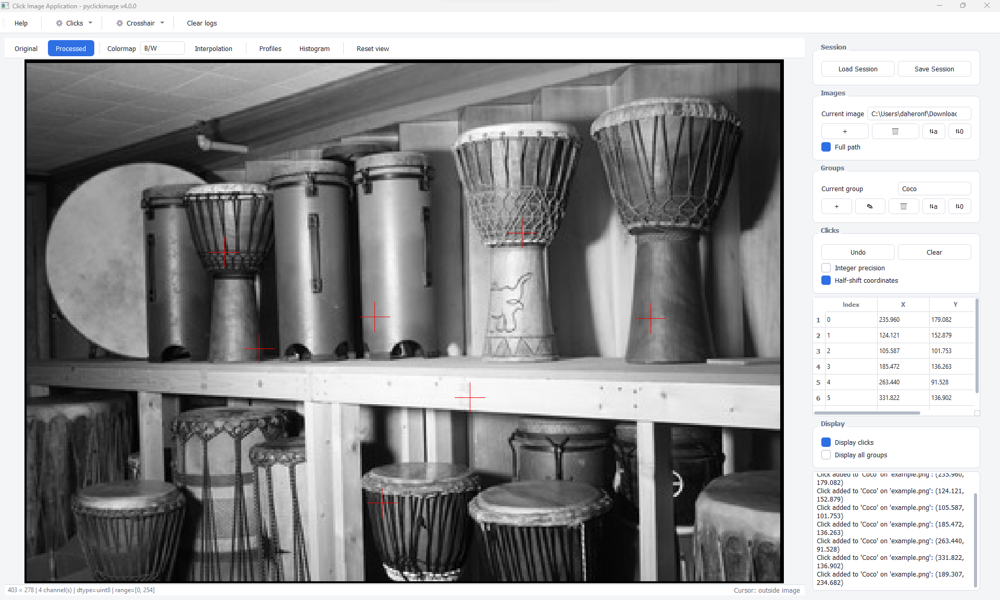

Welcome to pyclickimage’s documentation!#
Description of the package#
pyclickimage is a Python package providing a graphical interface to
collect 2D coordinates of points on images.
The application supports:
multiple images per annotation session,
multiple annotation groups,
subpixel floating-point coordinates,
JSON session save/restore (default format) and CSV export,
visualization and display controls,
programmatic extraction of annotations.
Contents#
The documentation is divided into the following sections:
Installation: How to install the package.
API Reference: Reference documentation for user functions and developer classes.
Usage: Tutorials and examples explaining how to use the application.
Contents:
Running the application#
A terminal command is installed with the package to launch the graphical interface:
pyclickimage-gui
The application can also be launched from Python using:
import pyclickimage
pyclickimage.run()

Releases (standalone application)#
Ready-to-use executables are published for each version on the GitHub Releases page. No Python installation is required.
Platform |
File |
Download |
|---|---|---|
Windows |
|
|
Linux (any distribution) |
|
|
Debian / Ubuntu |
|
Windows
Download pyclickimage-windows.exe and double-click it.
Windows SmartScreen may display a warning because the executable is not signed: click More info then Run anyway.
Linux (standalone executable)
chmod +x pyclickimage-linux
./pyclickimage-linux
Debian / Ubuntu (.deb package)
Installing the .deb package adds pyclickimage to the applications
menu and installs the required system libraries:
sudo apt install ./pyclickimage_X.Y.Z_amd64.deb
Replace X.Y.Z with the downloaded version. To uninstall:
sudo apt remove pyclickimage
Once the .deb package is installed, the application accepts the same
options as the Python command:
pyclickimage -i image1.tif image2.tif
pyclickimage -s annotations.json
Annotation sessions#
Annotations are stored as complete sessions.
A session can contain multiple images and multiple annotation groups.
Two file formats are supported:
JSON (default): complete session backup and restoration.
CSV: annotation export to external tools.
JSON session format#
The JSON format is the default and recommended format for saving and restoring annotation projects.
It stores the complete state of the annotation session, including:
image paths,
annotation groups,
click coordinates,
current selections,
session options.
A JSON session can be loaded later to restore the project exactly as it was saved:
{
"precision_mode": "float",
"current_image_index": 0,
"current_group_index": 1,
"groups": [
"default",
"Coco"
],
"images": [
{
"path": "image_1.png",
"groups": {
"default": [
[128.5, 102.0],
[115.2, 153.7]
],
"Coco": [
[201.0, 126.5]
]
}
}
]
}
CSV export format#
The CSV format is intended for exporting annotations to external tools such as spreadsheets or data processing pipelines:
Image,Group,Index,X,Y
image_1.png,default,0,128.5,102.0
image_1.png,default,1,115.2,153.7
image_1.png,Coco,0,201.0,126.5
image_2.png,default,0,80.0,45.3
The CSV columns are:
Image: image file path.Group: annotation group name.Index: point index inside the group.X: horizontal coordinate.Y: vertical coordinate.
Empty points can also be stored when a click is intentionally skipped:
Image,Group,Index,X,Y
image_1.png,default,2,,
CSV files do not store the complete application state. For saving and restoring complete projects, use the JSON format.
Coordinates#
Coordinates are stored as floating-point values to preserve subpixel precision.
The coordinates follow NumPy image indexing conventions:
image[Y, X]
where:
Xis the horizontal coordinate (column index),Yis the vertical coordinate (row index).
Resources#
The source code and documentation are available at:
GitHub repository: Artezaru/pyclickimage
Releases (executables): Artezaru/pyclickimage
Online documentation: https://Artezaru.github.io/pyclickimage
License#
pyclickimage is distributed under the GNU General Public License
version 3 or later (GPL-3.0-or-later).
See the LICENSE file included with the package for more information.